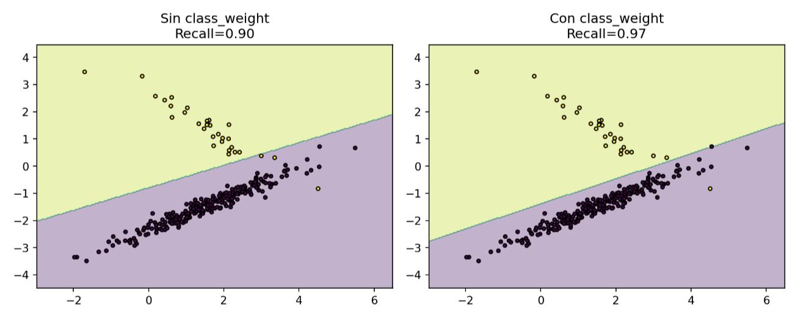
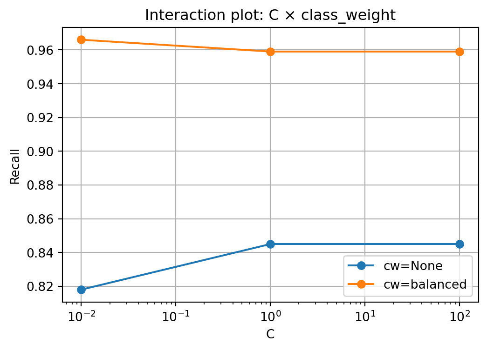
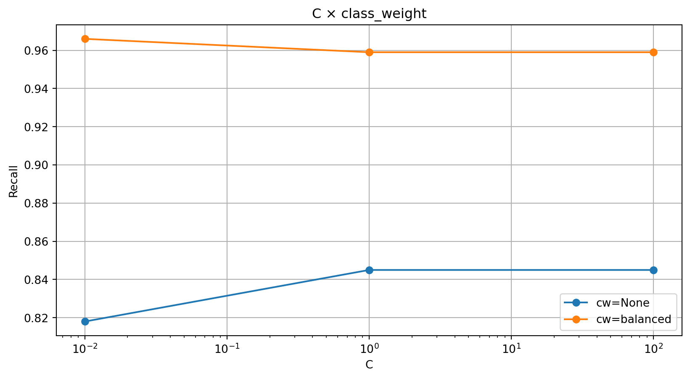
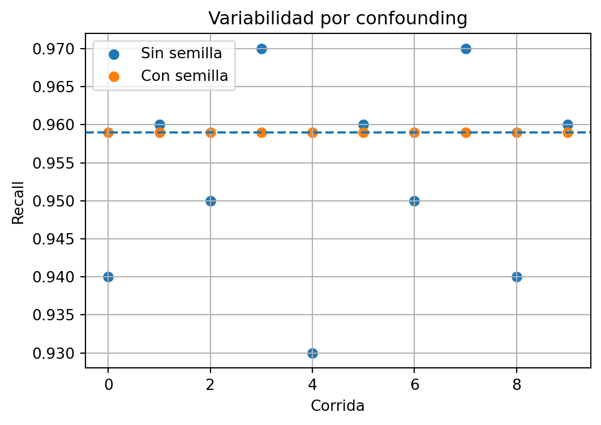
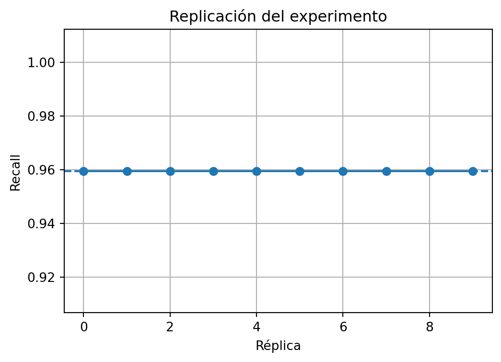
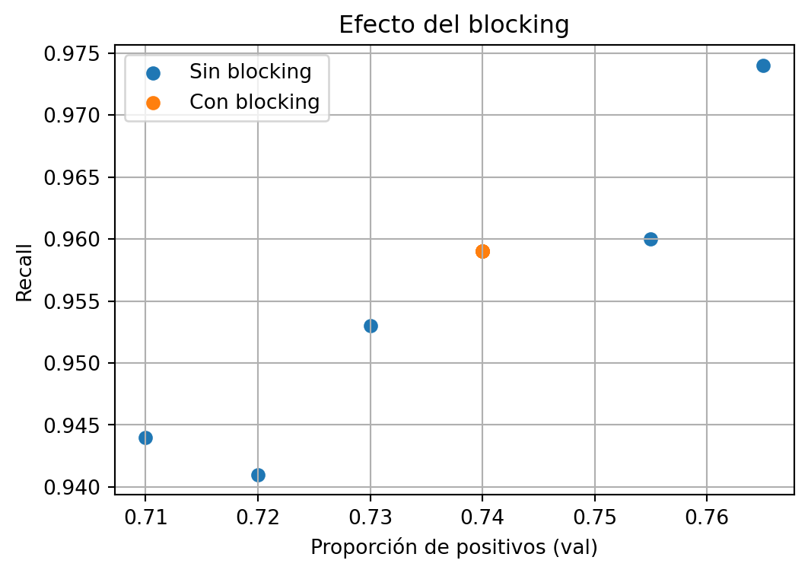
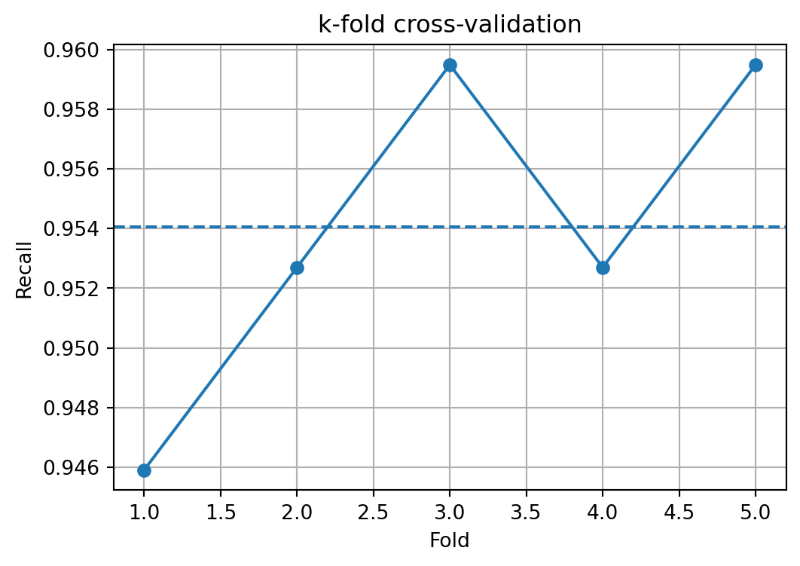
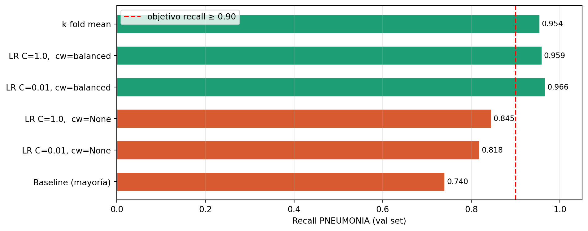

graph LR
subgraph "El Mundo Real"
D[(Datos Crudos <br/> X, y)]
end
subgraph "El Proceso Experimental (Caja Negra)"
direction TB
H[Espacio de Hipótesis] --> P{Algoritmo de <br/> Aprendizaje}
V[Variables de <br/> Control] --> P
end
subgraph "El Aproximador Universal"
F{{"f(X) ≈ y"}}
end
D --> P
P --> F
style F fill:#f9f,stroke:#333,stroke-width:4px
style D fill:#e1f5fe,stroke:#01579b
style P fill:#fff9c4,stroke:#fbc02d
Diseño de experimentos en ML
La pregunta es más importante que la arquitectura
Diego Villalba
2026-04-13
Agenda
| Bloque | Tema |
|---|---|
0:00–0:20 |
¿Qué es un experimento en ML? |
0:20–0:50 |
De problema a pregunta científica |
0:50–1:10 |
Hipótesis |
1:10–1:35 |
Variables y principios de robustez |
1:35–1:50 |
Métricas y baselines |
1:50–2:00 |
Arquitectura y estructura del proyecto |
| Cierre | Ejercicio integrador |
Bloque 1
¿Qué es un experimento en ML?
“ML es un aproximador universal de funciones Bishop (2006)”
¿Qué es un experimento en ML?
Al derraparnos en una bicicleta, un experimento no es “salir a ver qué pasa”, es una prueba controlada para entender la relación entre el equipo y el terreno. En ML, hacemos lo mismo con datos y algoritmos.
ML no es solo entrenar modelos
La primera trampa: confundir el medio (pedalear) con el fin (ganar estabilidad).
Analogía: Subirse a la bici es “entrenar”. Medir cómo la presión de las llantas afecta tu frenado es un experimento.
Definición formal
\text{Experimento} = \text{H} + \text{D} + \text{M} + \text{P}
| Elemento | Significado |
|---|---|
| H | Hipótesis (¿30 PSI es mejor?) |
| D | Datos (La grava de la curva) |
| M | Métrica (Metros de derrape) |
| P | Protocolo (10 vueltas a 20km/h) |
Cada componente: definido antes de escribir código.
El costo del trial-and-error
Sculley et al. (2015) — hidden technical debt:
Sin hipótesis previa, cada iteración es un “raspón” en los datos que no te enseña nada:
- Decisiones implícitas (¿Por qué bajé la presión?)
- Resultados no reproducibles (Ayer no me caí, hoy sí)
- Conclusiones vacías (Siento que “va mejor”)
El criterio de Popper
Popper (1959) — Falsabilidad:
Si no puedes definir de antemano qué resultado te haría decir “me equivoqué de presión”, no estás haciendo ciencia.
Pregunta obligatoria: “¿Qué haría si con 30 PSI derrapo más que con 50?”
El ciclo científico en ML
flowchart LR
%% Estilos de colores simples
classDef inicio fill:#e1f5fe,stroke:#01579b,stroke-width:2px,color:#000;
classDef proceso fill:#fff9c4,stroke:#fbc02d,stroke-width:2px,color:#000;
classDef decision fill:#e8f5e9,stroke:#2e7d32,stroke-width:2px,color:#000;
classDef final fill:#ffebee,stroke:#c62828,stroke-width:2px,color:#000;
%% Nodos
A["Observación\n(Me caigo en la grava)"]:::inicio
B["Pregunta\ncientífica"]:::proceso
C["Hipótesis\nfalsable"]:::proceso
D["Diseño\nexperimental"]:::proceso
E["Datos +\nprotocolo"]:::proceso
F["Métrica\nde evaluación"]:::proceso
G{"¿H₁\nconfirmada?"}:::decision
H["Aprendizaje:\nNo era la presión"]:::final
I["Conocimiento:\n30 PSI es óptimo"]:::inicio
%% Conexiones
A --> B
B --> C
C --> D
D --> E
E --> F
F --> G
G -- "No" --> H
G -- "Sí" --> I
H --> B
Aplicado al proyecto
Antes de abrir Colab: completa la tabla del protocolo. Si no puedes definir el “escenario de fracaso”, la pregunta aún es muy vaga.
Las 6 etapas del experimento
Montgomery (2017) sostiene que el rigor de un experimento no está en el resultado, sino en la trazabilidad del proceso.
La Disciplina del Protocolo
En ML, la tentación de “moverle tantito al código” mientras el modelo entrena es el equivalente a cambiar las llantas a mitad de una carrera. Sin intregables, el resultado no es un experimento, es una anécdota.
| Etapa | Entregable (El “Contrato”) | Ejemplo: Bicicleta |
|---|---|---|
| ① Objetivo | Pregunta Falsable | ¿Bajar la presión reduce el derrape? |
| ② Variable respuesta | Métrica + Umbral | Distancia de frenado < 2 metros |
| ③ Factores y niveles | Espacio de Búsqueda | Probar 30, 40 y 50 PSI |
| ④ Diseño | Plan de Corridas | Presión vs. Velocidad |
| ⑤ Ejecución | protocol.yaml |
Mismo sensor y terreno |
| ⑥ Análisis | Intervalos de Confianza | 1.8m ± 0.1m (n=10) |
El reto del tiempo: ¿Por qué diseñar el experimento?
En un mundo ideal, probaríamos todo. En el mundo real (y en la GPU), el tiempo es nuestro recurso más escaso.
Interacción Crítica
En la bici, el efecto de la presión cambia según la velocidad. En ML, el lr óptimo depende totalmente del batch_size. Si los pruebas por separado, nunca verás el panorama completo.
La explosión combinatoria
| Variable | Niveles |
|---|---|
| Presión / LR | 3 opciones |
| Velocidad / Batch | 3 opciones |
| Total | 9 combinaciones |
Visualizando el espacio de búsqueda
graph TD
%% Nodos principales
A[Presupuesto de Tiempo Limitado] --> B{Metodo de Exploracion}
B --> C[Ensayo y Error]
B --> D[Diseño Estrategico - DoE]
subgraph Resultados
D --> E[Efectos Principales]
D --> F[Interacciones]
end
%% Estilos Simples
style A fill:#f5f5f5,stroke:#333
style B fill:#fff3e0,stroke:#fb8c00
style C fill:#ffebee,stroke:#c62828
style D fill:#e8f5e9,stroke:#2e7d32,stroke-width:1px
style E fill:#e3f2fd,stroke:#1565c0
style F fill:#e3f2fd,stroke:#1565c0
Bloque 2
De problema a pregunta científica
Spiegelhalter (2019): “La mayoría de las preguntas son demasiado vagas para ser respondidas”
Pasar de un deseo a un experimento requiere precisión. No basta con “querer mejorar”; hay que definir qué mueves (X), qué mides (Y) y qué dejas fijo (Z).
\text{¿Cómo afecta } X \longrightarrow Y \mid Z?
El problema de la vaguedad
| Pregunta Vaga | Pregunta Científica (Bici) |
|---|---|
| “Siento que la bici se resbala” | “¿Bajar la presión de 50 a 30 PSI reduce la distancia de derrape en >2 metros en curvas de grava a 20 km/h?” |
| “La bici no frena bien” | “¿Frenar con un solo dedo en lugar de cuatro aumenta la distancia de parada en más de 1 metro sobre pavimento seco?” |
| “Probar llantas nuevas” | “¿Cambiar a llantas de tacos reduce la vibración en el manillar en al menos 10% comparado con las lisas en el mismo sendero?” |
El problema de la vaguedad
Plantilla (Huyen (2022))
“¿[Intervención X] mejora [métrica Y] en más de [umbral], bajo [condiciones Z], en [split específico]?”
Si no puedes completarla, la pregunta aún no está lista.
Nuestra pregunta científica
“¿Un modelo ResNet-18 (He et al. 2016) con fine-tuning sobre pesos ImageNet y pérdida ponderada (w_{pos}=2.0) alcanza recall ≥ 0.90 para PNEUMONIA en el test set de Kermany et al. (2018), con AUC-ROC mayor al de un clasificador de mayoría?”
X · Intervención
ResNet-18 + fine-tuning + pérdida ponderada w_{pos}=2.0
Y · Outcome
recall_pneumonia ≥ 0.90 auc_roc > 0.50
Z · Contexto
Dataset Kermany et al. (2018), split predefinido, seed = 42
Bloque 3
Hipótesis: ¿Realidad o Coincidencia?
Wasserman (2004) En estadística, el marco formal para decidir si un descubrimiento es real se basa en dos hipótesis enfrentadas: H_0: \text{no hay efecto (Azar)} \qquad H_1: \text{sí hay efecto (Realidad)}
La lógica es asimétrica: no aceptamos la hipótesis nula (H_0) como una verdad absoluta, simplemente admitimos que los datos actuales no tienen la fuerza suficiente para desmentirla.
La analogía de la bicicleta: El “golpe de suerte”
Imagina que bajas una curva de grava con 30 PSI y no te caes. ¿Fue la presión de la llanta o simplemente tuviste suerte en esa vuelta?
- H_0 (Hipótesis Nula): La presión de 30 PSI no hace diferencia. Si no te caíste, fue por puro azar o porque entraste con cuidado.
- H_1 (Hipótesis Alternativa): La presión de 30 PSI sí mejora el agarre. No te caíste porque la física de la llanta cambió.
¿Por qué es asimétrica?
En la ciencia, la carga de la prueba recae en el cambio.
En la Bici: Eres un “ciclista con suerte” (H_0) hasta que demuestres, tras 20 vueltas perfectas, que es “imposible” que sea solo azar. Solo entonces rechazamos H_0 y aceptamos que los 30 PSI son la causa real (H_1).
En ML: Tu modelo es “mediocre” (H_0) hasta que el Recall en el test set sea tan alto que la probabilidad de que haya sido suerte sea insignificante.
Marco formal de hipótesis
Una hipótesis solo es científica si puedes definir exactamente qué resultado te obligaría a admitir que estás equivocado.
El mantra de Popper
Para que tu hipótesis sobre la bici sea científica, debe ser falsable: debes estar dispuesto a admitir que te caíste por la presión y no por un bache fantasma.
Para el proyecto
H_0: \text{recall}_{\text{PNEUMONIA}} < 0.90
H_1: \text{recall}_{\text{PNEUMONIA}} \geq 0.90
Rechazo de H_0: recall ≥ 0.90 y AUC-ROC > 0.50
Aceptación de H_0: cualquier otro resultado
El test se ejecuta una sola vez sobre el test set.
Hipótesis falsables vs. no falsables
| No falsable | Falsable |
|---|---|
| “Con más datos el modelo mejoraría” | “Duplicar el training set incrementa AUC-ROC ≥ 0.02” |
| “ResNet es mejor para imágenes médicas” | “ResNet-18 supera a regresión logística en AUC-ROC en el test set” |
| “El modelo aprendió representaciones útiles” | “recall PNEUMONIA ≥ 0.90 con umbral 0.5 en test” |
| “Con más épocas mejoraría” | “30 épocas da recall > 15 épocas en el val set” |
“Data Snooping”
Hastie, Tibshirani, y Friedman (2009) advierte sobre las comparaciones múltiples: si pruebas 100 presiones de llanta y solo reportas la única con la que no te caíste, estás haciendo trampa. El éxito fue azar, no ciencia.
Regla de Oro: El Muro de Fuego
Para que tu métrica sea “honesta”, el proceso debe ser:
- Selección: Probar todo en el set de Validación (tu curva de práctica).
- Evaluación: Pasar por el set de Test (la carrera real) una sola vez.
⏸ Pausa · Ejercicio en vivo
Completa la tabla experimental
5 minutos · Chat de Zoom
¿Qué tan bien conoces tu experimento?
Instrucciones — responde en el chat de Zoom
Completa la siguiente tabla con un experimento de tu elección (puede ser el del proyecto o uno hipotético).
Tienes 5 minutos. Escribe tus respuestas directamente en el chat, una línea por campo. No hay respuestas incorrectas: el objetivo es detectar qué falta definir antes de escribir código.
Cuando termines, no envíes todavía — el instructor dirá cuándo publicar todos al mismo tiempo.
| Campo | Tu respuesta en el chat |
|---|---|
| Pregunta científica | ¿…? |
| Hipótesis H_0 | |
| Hipótesis H_1 | |
| Variable independiente | |
| Variable dependiente | |
| Métrica primaria con umbral | |
| Variables controladas (mínimo 3) | |
| Baseline de comparación | |
| ¿Qué resultado refutaría H_1? |
Respuestas de referencia
Pregunta e hipótesis
Pregunta: “¿ResNet-18 con fine-tuning y pérdida ponderada (w_{pos}=2.0) alcanza recall ≥ 0.90 en PNEUMONIA en el test set de Kermany et al. (2018), con AUC-ROC mayor al del clasificador de mayoría?”
H_0: recall_{ ext{PNEUMONIA}} < 0.90
H_1: recall_{ ext{PNEUMONIA}} ≥ 0.90
Criterio de rechazo de H_0: recall ≥ 0.90 y AUC-ROC > 0.50 — evaluado una sola vez en el test set.
Variables y métrica
Variable independiente: arquitectura ResNet-18 + régimen de fine-tuning con w_{pos}=2.0
Variable dependiente: recall de la clase PNEUMONIA en el test set
Métrica primaria: recall ≥ 0.90 (restricción clínica)
Variables controladas: semilla seed=42, split predefinido, batch=32, lr=0.001, versión de PyTorch
Baseline: clasificador de mayoría (siempre predice PNEUMONIA)
Refuta H_1: recall < 0.90 o AUC-ROC ≤ 0.50 en el test set
Bloque 4
Variables, DoE y principios de robustez
Montgomery (2017) · Hastie, Tibshirani, y Friedman (2009) · Pineau et al. (2021)
¿Qué es el Diseño de Experimentos (DoE)?
Diseñar experimentos ≠ probar al azar.
Es variar factores de forma sistemática para medir efectos reales.
Conceptos clave
- Factor: variable manipulada (
C) - Nivel: valor del factor (
0.01,1,100) - Respuesta: métrica objetivo (
recall) - Tratamiento: combinación de factores
¿Por qué no probar todo?
- 3 factores × 5 niveles = 125 corridas
- Costo crece exponencialmente
- DoE → menos corridas, mismas conclusiones
- Mantiene validez estadística
Fases del Diseño de Experimentos (DoE)
Diseñar bien un experimento es seguir un proceso estructurado, no solo correr modelos.
1. Definir el problema - Pregunta clara y medible
2. Elegir variables - Factores y respuesta
3. Screening - Identificar variables importantes
- Reducir el espacio de búsqueda
4. Diseñar experimento - OFAT o factorial
5. Ejecutar y analizar - Control (semilla, datos)
- Métricas e interacciones
6. Concluir - Qué importa y por qué
Lo que haremos hoy
Pregunta
¿Regularización C o class_weight impacta más el recall de PNEUMONIA?
Plan
- Modelo:
LogisticRegression - Factores:
C∈ {0.01, 1, 100}class_weight∈ {None, balanced}
- Métrica:
recall_pneumonia - Comparar vs baseline
¿Por qué simple?
- Resultados en segundos
- Aísla efectos sin ruido
- Escala directo a modelos complejos (ResNet)
Regularización C

Ponderación de clases class_weight

Variable respuesta: Recall
\text{Recall} = \frac{TP}{TP + FN}
- TP: detecta correctamente neumonía
- FN: no detecta un caso real
Interpretación:
Proporción de pacientes con neumonía que el modelo logra identificar.
Clave en medicina:
Minimizar FN → maximizar recall.
No buscamos accuracy global, sino no dejar pasar casos reales.

Setup del experimento
Idea clave
Controlamos la aleatoriedad para que el experimento sea reproducible y justo.
¿Por qué importa?
- Sin semilla → resultados cambian en cada corrida
- Con semilla → mismas condiciones → comparación válida
- Evitamos confounding por azar
Setup del experimento — código
# colab_bloque4.ipynb — Celda 1: Setup
import numpy as np
import random
from pathlib import Path
from sklearn.linear_model import LogisticRegression
from sklearn.dummy import DummyClassifier
from sklearn.metrics import (
classification_report, recall_score,
roc_auc_score, ConfusionMatrixDisplay
)
from sklearn.model_selection import train_test_split
import matplotlib.pyplot as plt
# Semilla global — controla el confounding
SEED = 42
random.seed(SEED)
np.random.seed(SEED)Preparación de datos
Idea clave
Construimos un problema controlado y realista (desbalanceado).
¿Qué estamos simulando?
- Clasificación de neumonía
- Datos desbalanceados (muchos positivos)
- Variables con señal + ruido
→ Hace relevante medir recall
División de datos (blocking)
Idea clave
Aseguramos que train y validation tengan la misma proporción de clases.
¿Por qué es crítico?
- Sin
stratify→ splits distintos por azar
- Comparaciones injustas entre modelos
- Con
stratify→ condiciones equivalentes
→ Esto es blocking por clase
Verificación del experimento
Resultado
Train: 800 | pos = 0.740
Val : 200 | pos = 0.740
Interpretación
- Misma distribución en ambos sets
- No hay sesgo por el split
- Podemos comparar modelos de forma válida
Mensaje clave
Antes de entrenar modelos, ya diseñamos el experimento.
Taxonomía de variables (DoE aplicado)
| Tipo | En este experimento |
|---|---|
| Independiente | C, class_weight |
| Dependiente | recall_pneumonia |
| Controlada | SEED, mismo split, mismos datos |
| Confusora | aleatoriedad no controlada |
Error común
Cambiar múltiples variables sin control:
C=0.01, None
vs
C=100, balanced
→ No sabes qué causó el efecto
Baseline antes de DoE — código
# Celda 3: Baseline nivel 0 — siempre predice PNEUMONIA
dummy = DummyClassifier(strategy="most_frequent")
dummy.fit(X_tr, y_tr)
y_pred_dummy = dummy.predict(X_val)
print("=== Baseline: Clasificador de mayoría ===")
print(classification_report(
y_val, y_pred_dummy,
target_names=["NORMAL", "PNEUMONIA"]
))
print(f"Recall PNEUMONIA : {recall_score(y_val, y_pred_dummy):.3f}")
print(f"AUC-ROC : {roc_auc_score(y_val, dummy.predict_proba(X_val)[:,1]):.3f}")Baseline
Resultado
- Recall (PNEUMONIA): 1.00
- AUC-ROC: 0.50
Interpretación
- Recall alto → detecta todos los casos
- Pero AUC = 0.5 → no discrimina nada
- Predice siempre “PNEUMONIA”
Idea clave
Un buen modelo debe mejorar recall y discriminación, no solo uno.
→ Este baseline es el piso mínimo.
DoE: OFAT vs Factorial
OFAT (uno a la vez)
- Cambias un factor, fijas el otro
- Ej:
Cconclass_weight=None- luego
class_weightconC=1
- Runs: 4
No ves combinaciones reales
Factorial completo (2²)
Pruebas todas las combinaciones
C∈ {0.01, 100}
class_weight∈ {None, balanced}Runs: 4
Ves interacciones
Idea clave
El mundo no cambia una variable a la vez.
→ El factorial captura cómo los factores se combinan.
–
Factorial completo (2×3)
Idea clave
Probamos todas las combinaciones de:
C∈ {0.01, 1, 100}
class_weight∈ {None, balanced}
¿Qué medimos?
- Recall (detectar neumonía)
- AUC (discriminación)
Resultados
Observación principal
class_weight="balanced"
→ sube recall ~ +0.12C
→ efecto pequeño
Insight (interacción)
El efecto fuerte viene de class_weight,
pero depende poco de C.
→ No todos los factores importan igual
¿Qué habría pasado con OFAT?
- Habrías visto efectos por separado
- Pero no esta asimetría clara
→ El factorial revela la estructura real
¿Qué es una interacción?
Hay interacción cuando el efecto de una variable depende del valor de otra.

Cómo verlo
- Líneas paralelas → no interacción
- Líneas cambian distinto → interacción
→ el efecto depende del contexto
Visualizar la interacción — código
# Celda 5: Gráfica de interacción (interaction plot)
import pandas as pd
rows = []
for C in C_levels:
for cw in cw_levels:
key = f"C={C}, cw={cw}"
rows.append({
"C": str(C),
"class_weight": str(cw),
"recall": results[key]["recall"],
"auc": results[key]["auc"],
})
df = pd.DataFrame(rows)
fig, axes = plt.subplots(1, 2, figsize=(10, 4))
for cw, grp in df.groupby("class_weight"):
axes[0].plot(grp["C"], grp["recall"], "o-",
label=f"cw={cw}", linewidth=2)
axes[1].plot(grp["C"], grp["auc"], "s--",
label=f"cw={cw}", linewidth=2)
for ax, metric in zip(axes, ["Recall PNEUMONIA", "AUC-ROC"]):
ax.set_xlabel("C (regularización)")
ax.set_ylabel(metric); ax.legend(); ax.grid(alpha=0.3)
ax.axhline(0.90, color="red", linestyle=":", alpha=0.6,
label="objetivo recall ≥ 0.90")
axes[0].legend(); plt.tight_layout(); plt.show()Interaction plot — resultado

Cómo leerlo
Líneas paralelas
→ sin interacciónLíneas se cruzan
→ interacción fuerte
Aquí: - Líneas casi paralelas
- Brecha constante
→ class_weight domina
→ C casi no cambia el resultado
¿Qué es el confounding?
Es cuando un factor oculto cambia al mismo tiempo que la variable que estás probando. No sabes qué causó el efecto
Ejemplo (bici)
Quieres saber por qué te caíste:
- Hipótesis: la presión de las llantas
- Pero ese día también ibas más rápido
Si te caes:
→ ¿Fue la presión o la velocidad?
→ No puedes saber
Problema
- Conclusión incorrecta
- Atribuyes el efecto a la variable equivocada
→ estás midiendo dos cosas a la vez
Efecto del confounding — código
# Celda 6: Demostración de confounding
# ¿Qué pasa si NO fijamos la semilla en el split?
recalls_sin_seed = []
recalls_con_seed = []
for i in range(20):
# SIN semilla: split distinto cada vez
X_tr_r, X_val_r, y_tr_r, y_val_r = train_test_split(
X, y, test_size=0.20, stratify=y # sin random_state
)
m = LogisticRegression(C=1.0, class_weight="balanced",
max_iter=1000, random_state=42)
m.fit(X_tr_r, y_tr_r)
recalls_sin_seed.append(recall_score(y_val_r, m.predict(X_val_r)))
# CON semilla fija: mismo split siempre
X_tr_f, X_val_f, y_tr_f, y_val_f = train_test_split(
X, y, test_size=0.20, stratify=y, random_state=42)
m2 = LogisticRegression(C=1.0, class_weight="balanced",
max_iter=1000, random_state=42)
m2.fit(X_tr_f, y_tr_f)
recalls_con_seed.append(recall_score(y_val_f, m2.predict(X_val_f)))
print(f"Sin semilla → recall: {np.mean(recalls_sin_seed):.3f} ± {np.std(recalls_sin_seed):.3f}")
print(f"Con semilla → recall: {np.mean(recalls_con_seed):.3f} ± {np.std(recalls_con_seed):.3f}")Efecto del confounding

Resultado
- Sin semilla → 0.957 ± 0.018
- Con semilla → 0.959 ± 0.000
Interpretación
- Sin control → el resultado fluctúa
- Con control → resultado estable
→ El confounding introduce ruido real
Riesgo
Podrías reportar 0.975 por azar
→ sobreestimar el modelo
→ decisión clínica incorrecta
¿Qué es la replicación?
Repetir el mismo experimento bajo las mismas condiciones
para ver si el resultado se mantiene.
Ejemplo (bici)
Repites el mismo recorrido varias veces:
- Si siempre te caes → el problema es real
- Si a veces sí y a veces no → hay variabilidad
→ no tienes una conclusión sólida
¿Por qué importa?
- Un solo resultado puede ser suerte
- Necesitas saber si el efecto es consistente
→ mide la varianza del modelo
Replicación — código
# Celda 7: Replicación con diferentes semillas de inicialización
# Muestra la varianza real del modelo, no la del split
best_config = {"C": 1.0, "class_weight": "balanced"}
recalls_repl = []
for i in range(10):
m = LogisticRegression(
**best_config,
max_iter=1000,
random_state=SEED + i # semilla distinta por réplica
)
m.fit(X_tr, y_tr) # mismo X_tr, X_val siempre
r = recall_score(y_val, m.predict(X_val))
recalls_repl.append(r)
print(f" Réplica {i+1:2d} | recall={r:.4f}")
print(f"\nMedia ± std: {np.mean(recalls_repl):.4f} ± {np.std(recalls_repl):.4f}")
print(f"→ std < 0.02: {'✓ Experimento estable' if np.std(recalls_repl) < 0.02 else '✗ Alta varianza — revisar'}")Replicación

Resultado
- Todas las corridas → 0.9595
- Media ± std → 0.9595 ± 0.0000
Interpretación
- Cero variación → experimento estable
- Resultado reproducible
Contexto
- Aquí: modelo determinista
- En redes → varianza real (±2–4 pts)
→ replicar es obligatorio
¿Qué es el blocking?
Organizar el experimento para comparar en condiciones equivalentes.
Problema sin blocking
- Cambian las condiciones
- El resultado varía por factores externos
→ ruido que no viene del modelo
Idea clave
Blocking = controlar el contexto
→ “comparar peras con peras”
Blocking — código
# Celda 8: Demostración de blocking estratificado
# ¿Cuánto varía el recall si el split no está estratificado?
print("=== Split SIN estratificación (sin blocking) ===")
for trial in range(5):
X_tr_b, X_val_b, y_tr_b, y_val_b = train_test_split(
X, y, test_size=0.20,
stratify=None, # sin blocking
random_state=trial * 7
)
print(f" Trial {trial+1} | pos_val={y_val_b.mean():.3f}", end="")
m = LogisticRegression(C=1.0, class_weight="balanced",
max_iter=1000, random_state=SEED)
m.fit(X_tr_b, y_tr_b)
r = recall_score(y_val_b, m.predict(X_val_b))
print(f" | recall={r:.3f}")
print("\n=== Split CON estratificación (con blocking) ===")
for trial in range(5):
X_tr_b, X_val_b, y_tr_b, y_val_b = train_test_split(
X, y, test_size=0.20,
stratify=y, # blocking por clase
random_state=trial * 7
)
print(f" Trial {trial+1} | pos_val={y_val_b.mean():.3f}", end="")
m = LogisticRegression(C=1.0, class_weight="balanced",
max_iter=1000, random_state=SEED)
m.fit(X_tr_b, y_tr_b)
r = recall_score(y_val_b, m.predict(X_val_b))
print(f" | recall={r:.3f}")Blocking — resultado

Observación
Sin blocking →
proporción varía (0.71–0.77)
recall cambia (0.94–0.97)Con blocking →
todo constante
Interpretación
- Variación ≠ modelo
- Variación = split
→ ruido espurio eliminado
Idea clave
Blocking = comparar en
las mismas condiciones
Validación cruzada k-fold — código
# Celda 9: k-fold cross-validation estratificada
from sklearn.model_selection import StratifiedKFold, cross_val_score
model_cv = LogisticRegression(
C=1.0, class_weight="balanced",
max_iter=1000, random_state=SEED
)
skf = StratifiedKFold(n_splits=5, shuffle=True, random_state=SEED)
# Recall por fold
from sklearn.metrics import make_scorer
scorer = make_scorer(recall_score)
fold_recalls = cross_val_score(model_cv, X, y, cv=skf, scoring=scorer)
print("Recall por fold:")
for i, r in enumerate(fold_recalls, 1):
print(f" Fold {i}: {r:.4f}")
print(f"\nMedia : {fold_recalls.mean():.4f}")
print(f"Std : {fold_recalls.std():.4f}")
print(f"\n→ std < 0.02: {'✓ Estimador estable' if fold_recalls.std() < 0.02 else '✗ Alta varianza — necesitas más datos'}")¿Qué es k-fold?
Divide los datos en k partes y repite el experimento k veces, usando una parte distinta como validación. → cada dato se usa para entrenar y evaluar
Problema sin k-fold
- Dependes de un solo split
- Resultado puede variar por azar
→ estimación inestable
Idea clave
k-fold no mejora el modelo
→ mejora qué tan bien lo medimos
- Menor varianza
- Evaluación más robusta
- Mejor comparación entre modelos
k-fold — resultado

Resultado
- Media → 0.9541
- Std → 0.0053
Interpretación
- Variación pequeña entre folds
- Estimador estable
→ modelo generaliza bien
¿Cuándo usar k-fold?
- Datos pequeños → ✓
- Comparar modelos → ✓
- Datos grandes → split basta
Resumen visual del bloque — código

Resumen del bloque — resultado
Lo que demostró este bloque
Variables: class_weight es la variable independiente dominante — cambia el recall en ~12 pp. C tiene efecto secundario.
DoE: el diseño factorial 2 \times 3 reveló la interacción que OFAT habría perdido.
Confounding: sin semilla fija, la varianza espuria puede ser ±1.8 pp — mayor que el efecto de C.
Blocking: sin estratificación, la varianza del split puede ser ±3.3 pp — mayor que la diferencia entre modelos.
Mañana con ResNet-18: los mismos principios, el mismo código de aleatorización y blocking, pero con ~11M parámetros.
Bloque 5
Métricas y baselines
La métrica define el problema (I)
Idea clave
El modelo aprende lo que le pides optimizar.
→ La métrica define el problema.
Accuracy es engañosa
- PNEUMONIA ≈ 74%
- Modelo trivial: siempre predice PNEUMONIA
→ Accuracy ≈ 62.5% sin aprender nada
La métrica define el problema (II)
Problema real
- Recall = 100%
- Precision = 62.5%
→ 37.5% falsas alarmas clínicas
Insight
Alta accuracy ≠ modelo útil
→ depende del contexto
Baselines: el principio de parsimonia
Burkov (2020):
“Si no superas un baseline simple, tu modelo no sirve.”
Hastie, Tibshirani, y Friedman (2009) — bias-variance tradeoff: si el modelo simple ya alcanza el nivel de error aceptable, aumentar complejidad solo introduce varianza.
Pirámide de complejidad creciente
| Nivel | Modelo |
|---|---|
| 0 | Clasificador de mayoría |
| 1 | Regresión logística sobre píxeles |
| 2 | CNN de 3 capas desde cero |
| 3 | ResNet-18 fine-tuning ← H₁ |
El nivel n solo tiene valor si supera al n-1.
Bloque 6
Arquitectura y estructura del proyecto
He et al. (2016) · Huyen (2022) · Burkov (2020) · Wilson et al. (2017)
Match tarea → arquitectura
flowchart LR
A(["Clasificación\nde imagen médica"])
subgraph top ["Volumen de datos"]
direction LR
B1[" < 10 000\nTransfer learning"]
B2["> 100 000\nDesde cero"]
end
subgraph bottom ["Arquitectura recomendada"]
direction LR
C1[" Interpretabilidad\nResNet-18 · DenseNet-121"]
C2[" Velocidad\nEfficientNet-B3 · ViT-B/16"]
end
A --> top
B1 -->|"Sí"| C1
B1 -->|"No"| C2
B2 --> C2
ResNet-18
He et al. (2016) 11M params · < 10 min en Colab T4 · Compatible con Grad-CAM
Transfer learning
~5 800 imágenes · Pesos ImageNet disponibles · Generaliza con datos escasos
Variable del experimento
freeze_backbone = True (baseline) vs. False (fine-tuning completo)
Ejercicio de cierre
Diseña tu experimento
Quieres saber si normalizar los datos mejora el desempeño de un modelo.
| Componente | Tu respuesta |
|---|---|
| Pregunta científica | ¿Normalizar mejora el modelo? |
| Hipótesis H_0 | No hay diferencia |
| Hipótesis H_1 | Sí mejora |
| Variable independiente | Normalización (sí / no) |
| Variable dependiente | Recall (o accuracy) |
| Variables controladas | Mismo modelo, mismos datos, misma semilla |
| Métrica con umbral | Ej: recall ≥ 0.90 |
| Baseline | Modelo sin normalizar |
| Refutación de H_1 | No mejora o empeora |
Discusión
- ¿Es justo usar el mismo test set?
- ¿Qué debe mantenerse fijo?
- ¿Qué pasaría si cambias la semilla?
Mensaje central
\boxed{\text{La arquitectura es intercambiable. La pregunta científica no.}}
Importante
Una pregunta mal formulada produce experimentos que no pueden ser refutados.
Advertencia
Un experimento sin refutación posible no produce conocimiento.
Tip
Un modelo sin conocimiento válido no debe desplegarse. — Sculley et al. (2015)
Popper (1959): el progreso científico avanza por refutaciones. Diseña activamente contra tu propia hipótesis.
Checklist del Día 1
Referencias
Bishop, Christopher M. 2006. Pattern Recognition and Machine Learning. Springer.
Burkov, Andriy. 2020. Machine Learning Engineering. True Positive Inc. http://www.mlebook.com.
Hastie, Trevor, Robert Tibshirani, y Jerome Friedman. 2009. The Elements of Statistical Learning: Data Mining, Inference, and Prediction. 2.ª ed. Springer. https://hastie.su.domains/ElemStatLearn/.
He, Kaiming, Xiangyu Zhang, Shaoqing Ren, y Jian Sun. 2016. «Deep Residual Learning for Image Recognition». En Proceedings of the IEEE Conference on Computer Vision and Pattern Recognition (CVPR), 770-78. https://doi.org/10.1109/CVPR.2016.90.
Huyen, Chip. 2022. Designing Machine Learning Systems. O’Reilly Media.
Kermany, Daniel S., Michael Goldbaum, Wenjia Cai, et al. 2018. «Identifying Medical Diagnoses and Treatable Diseases by Image-Based Deep Learning». Cell 172 (5): 1122-31. https://doi.org/10.1016/j.cell.2018.02.010.
Montgomery, Douglas C. 2017. Design and Analysis of Experiments. 9.ª ed. Wiley.
Murphy, Kevin P. 2012. Machine Learning: A Probabilistic Perspective. MIT Press.
Pineau, Joelle, Philippe Vincent-Lamarre, Koustuv Sinha, et al. 2021. «Improving Reproducibility in Machine Learning Research». NeurIPS Reproducibility Program. https://www.cs.mcgill.ca/~jpineau/ReproducibilityChecklist.pdf.
Popper, Karl R. 1959. The Logic of Scientific Discovery. Hutchinson.
Sculley, D., Gary Holt, Daniel Golovin, et al. 2015. «Hidden Technical Debt in Machine Learning Systems». En Advances in Neural Information Processing Systems (NeurIPS). Vol. 28.
Spiegelhalter, David. 2019. The Art of Statistics: How to Learn from Data. Basic Books.
Wasserman, Larry. 2004. All of Statistics: A Concise Course in Statistical Inference. Springer.
Wilson, Greg, Jennifer Bryan, Karen Cranston, et al. 2017. «Good Enough Practices in Scientific Computing». PLOS Computational Biology 13 (6). https://doi.org/10.1371/journal.pcbi.1005310.

Sesión 1 · Workshop ML 2026